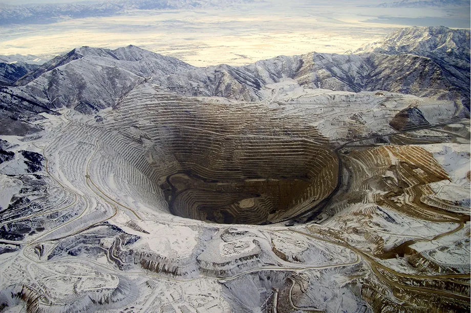
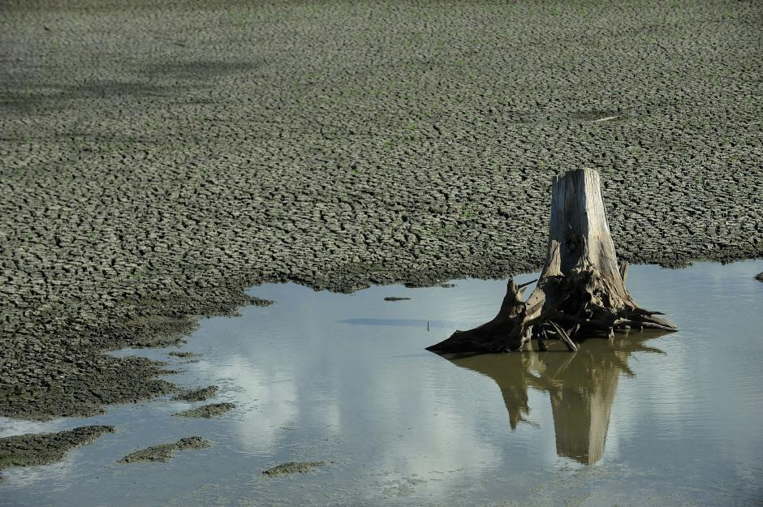

Escassez de recurso
A escassez de recursos é o resultado da superpopulação orientada para o consumo, o que leva ao esgotamento dos recursos limitados do planeta, como minerais, combustíveis fósseis e água, embora existam formas de reduzir esse consumo ou substituí-lo por outros recursos que são um recurso essencial por tudo que consome em aparelhos eletrônicos ou planejamento urbano, mas a cada ano a população do planeta só aumenta, o que acaba levando a um consumo ainda maior a cada ano.
A qualidade de outros recursos naturais, como a água, o ar e a terra, pode ser permanentemente afetada pela exploração econômica. Devido à utilização crescente e muitas vezes instável, estes recursos estão também cada vez mais disponíveis de forma qualitativa. Também havendo danos ambientais críticos por conta da falta de recursos essenciais como água e a poluição do solo ou desmatamento, o que por serem recursos básicos nos impede de criar outros produtos derivados deles.
Também havendo danos ambientais críticos por conta da falta de recursos essenciais como água e também a poluição do solo ou desmatamento, o que por serem recursos básicos nos impede de criar outros produtos derivados deles.
Essa escassez de recursos também afeta a economia, com 91% das empresas industriais sentindo os efeitos da escassez de recursos, o que levou dois terços a aumentarem o seu investimento em iniciativas de circularidade para os próximos três anos.